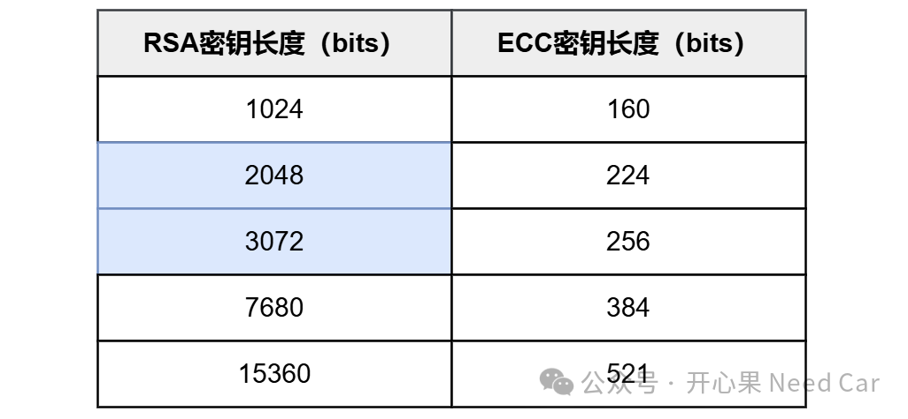

信息安全的范畴里，有很多非对称算法，eg：RSA（Rivest-Shamir-Adleman）、DSA（Digital Signature Algorithm，数字签名算法）、ECC（Elliptic Curve Cryptography，椭圆曲线密码学）。所谓非对称算法，是因为信息交互双方需要利用公钥和私钥两把密钥。信息安全概念在互联网早已使用，但是，在汽车行业还刚刚起步，有些概念性的知识，对于汽车工程师来说还有些模糊。本文基于RSA和EdDSA延展讨论非对称算法的一些基本概念，以及讨论一下RSA 是否正在逐渐被EdDSA所取代？
1、基础概念
ECC是一种基于椭圆曲线数学的公开密钥加密算法，其实质在于通过离散对数问题来达成加密的目的(1)，主要用于公钥加密、数字签名和密钥交换等领域。
（二）什么是ECDSA（Elliptic Curve Digital Signature Algorithm，椭圆曲线数字签名算法）
ECDSA是一种基于椭圆曲线密码学（ECC）作为基础数学结构的数字签名算法。ECDSA主要用来验证信息的完整性和有效性。
（三）什么是EdDSA（Edwards-Curve Digital Signature Algorithm，Edwards曲线数字签名算法）
EdDSA是一种新型的数字签名算法，基于Edwards曲线，主要为提高速度和安全性而设计。EdDSA设计中考虑了计算效率，通常比传统的ECDSA更快。
（四）ECC与ECDSA、EdDSA关系与应用场景
ECC提供了ECDSA所需的数学基础和安全性支持，即：ECDSA是建立在ECC基础之上的一种具体的应用和实现方式。EdDSA也是基于ECC的一种具体实现，EdDSA使用了Edwards曲线作为其安全基础，因此它的安全性和效能都是基于ECC所提供的数学原理。ECC可以用于很多不同的加密任务，ECDSA用于创建和验证数字签名，而EdDSA专注于高效且安全的数字签名。
（五）椭圆曲线
“在应用椭圆曲线构建并实现密码学方案时，首先需要选择适当的椭圆曲线类型。常见的椭圆曲线有secp256k1、secp256r1、Curve25519、Ed25519，以及国产密码学算法SM2所依赖的椭圆曲线sm2p256v1”(2)。secp256k1、secp256r1都属于椭圆曲线数字签名算法ECDSA签名的具体实现；ed25519属于EdDSA签名算法的具体实现。
（六）什么是RSA
RSA（Rivest-Shamir-Adleman）算法是一种广泛使用的公钥密码学算法，主要用于数据加密和数字签名，RSA算法的安全性依赖于大整数分解的困难性。
2、同等级安全下的RSA和ECC密钥长度对比
对比ECC和RSA两种算法，同等安全级下，所需要的密钥长度，对比如下(3)：

实际的工程项目中，在安全升级过程中，RSA2048算法较为常见，主要用于验签升级的程序是否有篡改。目前，也有厂商尝试使用RSA3072。计算机科学家曾认为：对于经典计算机来说，因数分解超过2048位的数字几乎是不可能的，而2048位是最常用的RSA加密形式的基础。所以，工程上常常选用RSA2048作为软件升级的验签方案。可是，随着量子计算的使用，RSA2048已不在安全，据(4)发表的研究：Gidney和Ekera用量子计算机2000 万个量子位来进行计算，仅8小时破解了2048位RSA加密信息。所以，目前就有的厂商开始切换安全性更高的EdDSA。(1)https://segmentfault.com/a/1190000019172260
(2)https://zhuanlan.zhihu.com/p/524180490
(3)https://blog.csdn.net/keheinash/article/details/137858345(4)https://www.technologyreview.com/2019/05/30/65724/how-a-quantum-computer-could-break-2048-bit-rsa-encryption-in-8-hours/点击下方关注，一起聊聊Autosar/嵌入式，如果需要，联系作者进群，给你更专业的解答